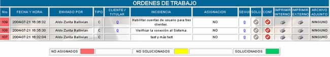
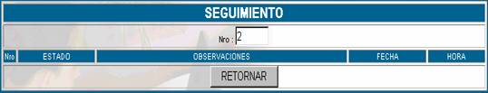
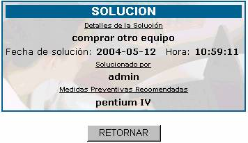
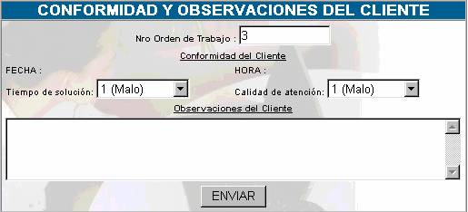

ORDENES DE TRABAJO
Como se describió anteriormente, su orden de
mesa ya ingresó al sistema y usted puede realizar un seguimiento de las órdenes
que envió, esta opción presenta la siguiente pantalla principal:

Donde:
Nro; Especifica
el número de orden de mesa de ayuda asignado por el sistema, este número es
correlativo, y se marca con un color de acuerdo al estado en el que se
encuentra.
NO ASIGNADOS à Cuando la orden de mesa no
ha sido asignada a un especialista de acuerdo a su nivel, incidencia y
prioridad; caso contrario se visualiza el nombre de la persona a quien ha sido
asignado.
NO SOLUCIONADOS à Cuando
la orden de mesa ha sido asignada a un especialista, pero dicha persona aun no ha
registrado una solución.
SOLUCIONADOS à Cuando el especialista ha
registrado la solución a la orden de mesa.
Fecha y Hora; especifica la fecha y hora en la que la orden de mesa
ha ingresado en la mesa de ayuda.
Enviado por; especifica su nombre, debido a que usted envió todas
las órdenes que puede visualizar.
Tipo; especifica el tipo de usuario que es usted con una C = Cliente
Incidencia; especifica la descripción de la incidencia a la cual
se le tiene que dar solución. Se denomina incidencia, a todas las
consultas de los clientes sin aclarar la naturaleza de las mismas, pudiendo
ser: reclamos, denuncias, dudas operativas, técnicas, de normatividad,
aplicación, obtención de información, desarrollo, etc.
Asignación; especifica el nombre de la persona a la cual se ha
asignado la solución de su orden de mesa, esta asignación sólo la puede
realizar un técnico o administrador. Si aparece NO, significa que no se ha
asignado aún la orden de mesa.
Segui; en caso de
que la orden de trabajo tenga que ser realizada en fases, en esta columna se
mostrara el seguimiento del trabajo, la fase en la que se presente. Si hace click en este campo se mostrara la siguiente pantalla:

Estado; se
aplicará una calificación del 1 al 5 en función del cumplimiento o vencimiento
de fechas, se aplica la escala siguiente:
1. Cumplida en fecha, 2. Cumplida retrasada, 3. Pendiente en Fecha, 4.Pendiente
retrasada, 5. Desestimada.
Observaciones; son
los comentarios del especialista y/o de Mesa de ayuda.
Fecha y Hora; registro
de tiempos del seguimiento.
Solu; esta
opción se activará siempre y cuando el responsable asignado haya registrado la
solución de la orden de trabajo. Presione sobre el icono para
ver la descripción de la solución.

Conf; en este
campo usted podrá llenar datos si es que está conforme o no con la solución que
se le está dando a la orden de trabajo. Si es que existe una solución a su
problema usted podrá llenar la conformidad haciendo click
sobre el icono , caso
contrario si ya envió su conformidad podrá ver el icono en este campo.

Llene estos campos de acuerdo a la siguiente
descripción:
Nro Orden de trabajo; especifica el número de la orden de trabajo con la que se está
trabajando.
Fecha y Hora; datos del sistema.
Tiempo y Calidad de Atención; se
establece una escala de 1. Malo 2.Bueno 3. Excelente. Establezca su escala de
acuerdo a su criterio.
Observaciones del cliente; si usted
tiene alguna observación, sobre el tiempo de atención, la solución, etc. regístrela
en este campo.
Imprimir Interno / Imprimir Externo  ; Al hacer click sobre esta
opción usted obtendrá un reporte detallado desde que la orden de trabajo
ingresa al sistema , su seguimiento y solución correspondientes. La opción
Interno emitirá un reporte para la Institución, y la opción Externo para el
Cliente.
; Al hacer click sobre esta
opción usted obtendrá un reporte detallado desde que la orden de trabajo
ingresa al sistema , su seguimiento y solución correspondientes. La opción
Interno emitirá un reporte para la Institución, y la opción Externo para el
Cliente.